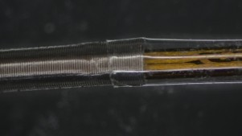
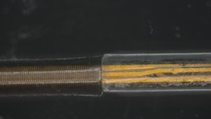
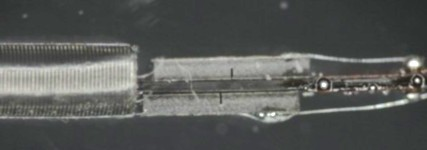
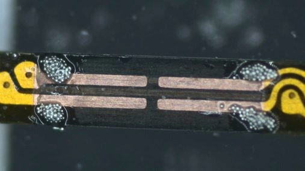
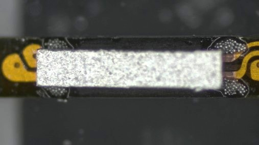
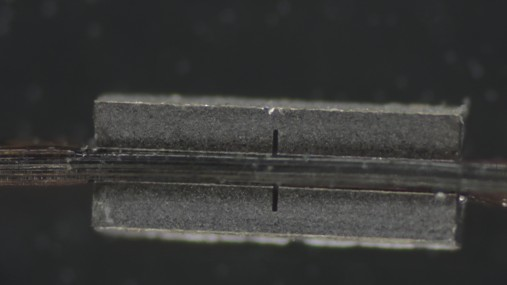

專案一：超聲波輔助溶栓導管

專案概述
本專案旨在開發結合超音波技術與藥物溶栓的創新導管系統，透過超音波的機械振動效應增強溶栓藥物的效果， 同時降低對周圍健康組織的損傷。此導管整合了柔性電路板（FPC）技術，實現精密的超音波換能器控制與訊號傳輸。
導管原型展示
下方展示導管原型的動態演示影片以及柔性電路板（FPC）的設計細節。FPC作為導管的核心控制元件， 提供了超音波換能器所需的電氣連接與訊號控制功能，其柔性特性使導管能夠適應人體血管的彎曲結構。

導管類型比較
在研發過程中，我們測試了多種導管配置方案，包括搭配Dynaflex管、Zuss管以及無外管設計。 每種設計都針對不同的臨床需求與操作場景進行了優化，以下展示各類型導管的實際外觀與結構特性。

Dynaflex管配置

Zuss管配置

無外管配置
製程技術：精密焊接
導管製作的關鍵步驟之一是超音波換能器的精密焊接。透過嚴格的焊接工藝控制， 確保換能器與FPC之間的電氣連接穩定可靠，同時維持導管的微型化設計。 以下展示焊接製程的各個階段，從初始焊接到最終成品的完整過程。

焊接製程 - 步驟一

焊接製程 - 步驟二

焊接完成 - 正面視角

焊接完成 - 側面視角

接地線焊接 - 正面

接地線焊接 - 側面
技術特色
- 超音波增強溶栓：利用超音波的空化效應與機械振動，顯著提升溶栓藥物的穿透力與作用效率
- 柔性電路整合：採用FPC技術實現導管的柔性與可操控性，適應複雜的血管路徑
- 生物相容性設計：所有材料均符合醫療級標準，確保患者安全
應用領域
- 急性缺血性中風：快速溶解腦血管栓塞，恢復腦部血流供應
- 深層靜脈栓塞：治療下肢深層靜脈血栓，預防肺栓塞併發症
- 急性心肌梗塞：輔助冠狀動脈血栓的快速清除
- 周邊動脈疾病：改善周邊血管的血流通暢性
未來展望
- 進行動物實驗驗證，評估臨床安全性與有效性
- 開發即時超音波影像導引系統，實現精準定位
- 優化超音波參數控制演算法，提升治療效率
- 申請醫療器材認證，推動臨床試驗與商業化應用
- 探索與其他治療技術（如光熱治療）的聯合應用可能性